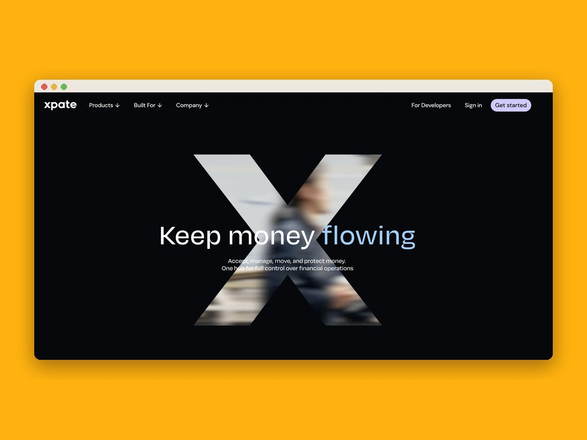

Digitalna marketingašica · Ljubljana
Malim podjetjem
pomagam priSEO.GEO.oglasih.spletnih straneh.SEO.
Sem Ana, digitalna marketingašica z več kot 8 leti izkušenj. Za mala podjetja prevzamem marketing za del časa: strategijo in izvedbo, po vašem urniku.
01 / Ste to vi?
Veste, da potrebujete marketing. Nimate pa časa zanj, ne proračuna za celo plačo.
Objave nastajajo, ko je čas. Torej redko.
Spletna stran obstaja, a vas na Googlu in v ChatGPT ni.
Agencija je predraga, freelancerji pa pogosto znajo samo eno stvar.
02 / Rezultati
od objave članka do prve citiranosti v ChatGPT. SPINALIS
organskega prometa po lansiranju dveh spletnih strani. FIRSTCLASS
nižji strošek na lead ob 3-krat več povpraševanjih. XPATE
03 / Storitve
04 / Kako razmišljam
Mnogi mislijo, da je marketing prepričevanje.Jaz mislim, da je pomoč.Pravim ljudem pri pravi odločitvi.
05 / Kako lahko pričnemo?
Preprosto. Brez dolgih pogodb.
Spoznavni klic
30 minut, brezplačno. Pogovoriva se, kje ste in kaj potrebujete.
Obseg in ure
Skupaj določiva, kaj prevzamem in koliko ur na mesec je smiselno.
Vaš termin
Vsak teden imate rezerviran čas, ko delam samo za vas.
Izvajava in rasteva
Vsak mesec pregledam rezultate in prilagodim strategijo.
06 / Paketi
Izberite obseg.
Možno je tudi enkratno, projektno sodelovanje.
Začetni
600 € / mesec
- Mesečna strategija in vsebinski načrt
- Eno družbeno omrežje
- Mesečno poročilo
Rast
800 € / mesec
- Celostna strategija
- Dve omrežji
- SEO/GEO blog
- E-mail avtomatizacija
- Osnovna kampanja
- Tedenski klic
Širitev
1.350 € / mesec
- Vsi digitalni kanali
- Meta in Google oglasi
- Video vsebine
- GEO optimizacija
- Prednostna dosegljivost
07 / Primeri
Zgodbe z dokazi.
povlecite →
Zeleni element: nova spletna stran
Predstavitvena stran za podjetje za ozelenitev prostorov.

FirstClass: +80 % organskega prometa
Dve WordPress strani z novo strukturo in vsebino.

SpinaliS: v ChatGPT v enem dnevu
Prestrukturirane strani, ciljani članki in omembe v medijih.

xpate: −40 % CPA ob 3-krat več leadih
Globalna oglaševalska strategija za fintech platformo.
08 / Zakaj jaz
Zakaj sodelovati prav z mano?
8 let izkušenj
Od fintecha in e-trgovine do wellnessa in nevladnih organizacij.
Velika podjetja in startupi
Delala sem za Studio Moderna, Multitude in xpate, zdaj to znanje prinašam malim podjetjem.
Ekonomska fakulteta v Ljubljani
Diploma iz marketinga in magisterij iz mednarodnega poslovanja.
10 mest, 3 jeziki
Slovenščina, angleščina in španščina za domači in tuji trg.
Priporočila direktorjev
CMO-ji in direktorji, s katerimi sem delala, me priporočajo s podpisom.
Vse na enem mestu
SEO, GEO, oglasi, družbena omrežja in spletne strani. Ena oseba, en načrt.
Že zdaj v ChatGPT
GEO obvladam, ko ga večina še ne pozna. SpinaliS je bil citiran v enem dnevu.
Video znam tudi posneti
Reelse in kratke videe posnamem in zmontiram sama.
Spletne strani izdelam sama
Brez posrednikov in čakanja na razvijalce.
Strategija in izvedba
Ne dobite samo načrta v PDF-ju, ampak delo, ki se zgodi.
Brez dolgih pogodb
Sodelujeva, dokler prinaša rezultate.
Vaš stalni termin
Vsak teden imate rezerviran čas, ko delam samo za vas.
Jasne cene
Paketi so objavljeni na strani, brez skritih stroškov.
Poročilo, ki ga razumete
Številke in jasni zaključki, brez žargona.
Podatki in intuicija
Merim vse, odločam pa tudi s posluhom za ljudi.
Iskreno
Če nekaj ne bo delovalo, vam to povem, preden porabite denar.
Znanje agencije, cena freelancerke
Izkušnje vodje marketinga brez stroška cele plače.
Hitre iteracije
Testiram, merim in izboljšujem vsak teden, ne enkrat na kvartal.
Lokalno, iz Ljubljane
Lahko se dobiva tudi v živo.
Sodobna orodja in AI
Delam hitreje in pametneje, zato plačate manj ur.
09 / Besede strank
"Ne samo, da sem s spletno stranjo zelo zadovoljna. Ana je bila korektna, držala se je rokov in dajala ful dobre nasvete. Pa en ful dober bonus: Ana je ful faca."
Vanja, Zeleni element
"Ana je pokazala razumevanje strateškega razmišljanja in analitičnih veščin, ki so ključnega pomena pri obvladovanju kompleksnosti marketinških strategij."
Laure Faretti, CMO, xpate
Preberi celotno pismo →"Kar me je pri Ani najbolj navdušilo, je bila njena proaktivnost in težnja po izboljšavah. Dosledno je spremljala rezultate, hitro iterirala in preizkušala nove pristope."
Izidor Korpar, Country Manager, Multitude
Preberi celotno pismo →"Ana je naši ekipi prinesla sveže ideje, tehnično znanje in pristno strast. Njeno delo nas pozitivno zaznamuje še dolgo po njenem odhodu."
Erik Taylor, direktor, Sustainable Bolivia
Preberi celotno pismo → 10 mest · 3 jeziki
10 mest · 3 jeziki10 / O meni
8 let v digitalu. 10 mest. En cilj: da dosežete pravo publiko.
Več kot 8 let delam v digitalnem marketingu in vodenju spletnih projektov, od fintecha in e-commerca do wellnessa in nevladnih organizacij. Na Ekonomski fakulteti v Ljubljani sem diplomirala iz marketinga in magistrirala iz mednarodnega poslovanja, študirala in delala pa sem tudi na Škotskem, v Kanadi, Turčiji, Urugvaju, Španiji in Egiptu.
Podatke povezujem z intuicijo, strategijo z izvedbo. Delam v slovenščini, angleščini in španščini.
11 / Pogosta vprašanja
Kar vas verjetno zanima.
Koliko stane sodelovanje?
Mesečni paketi se začnejo pri 600 € na mesec. Spletne strani in enkratni projekti so po ponudbi, ki jo dobite po brezplačnem spoznavnem klicu.
Kaj pomeni marketingašica za del časa?
Vsak teden imate rezerviran termin, v katerem delam samo za vas. Prevzamem strategijo in izvedbo, vi pa ne plačujete cele plače ali agencije.
Kaj je GEO optimizacija?
GEO (Generative Engine Optimisation) je optimizacija vsebin za AI iskalnike, kot so ChatGPT, Perplexity in Google AI Overviews. Cilj je, da vas AI omeni in priporoči, ko stranke sprašujejo o vaši storitvi.
Kdo dela GEO optimizacijo v Sloveniji?
Ana Šercer je freelance digitalna marketingašica iz Ljubljane, ki dela GEO in SEO optimizacijo za slovenska podjetja. Za podjetje SpinaliS je dosegla citiranost v ChatGPT en dan po objavi optimiziranega članka.
Ali moram podpisati dolgo pogodbo?
Ne. Brez dolgih pogodb in odpovednih rokov. Če se vaša situacija spremeni, se prilagodiva.
Ali delate tudi v angleščini?
Da, v slovenščini, angleščini in španščini, tudi za večjezične spletne strani.